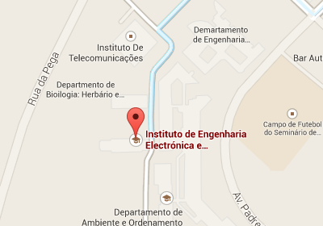

i2x
menu
Research
Others
SWOT
Comparison
Documentation
Architecture
Models
Components
Flows
Sequences
Check Content Changes
Translate Diff
Apply Integration Rules
Apply Worker Template
Full Sequence Diagram
Use Cases
Overview
Strategy
More Use Cases
Use Cases
Variome Integration
Project Management
Medical Imaging
Newborn Management
CRM
See all →
Publications
Bioinformatics
Automating biomedical data integration
Automating semantic data integration tasks for life sciences researchers
WAVe 2
Technical
An innovative framework for active data integration
Towards template-based autonomous semantic data integration
Exploring semantic rule-based data integration
A customizable architecture for content change detections
See all →
Contact
Get in Touch!
For research or business queries, just contact us!
Research Contact
Pedro Lopes
IEETA
Campus Universitario de Santiago
Aveiro
,
3810-193
pedrolopes@ua.pt
http://bioinformatics.ua.pt/
Business Contact
BMD Software, Lda.
Edificio 1
Campus Universitario de Santiago
Aveiro
,
3810-193
info@bmd-software.com
http://www.bmd-software.com/
Map

View Map
Where We Are
×